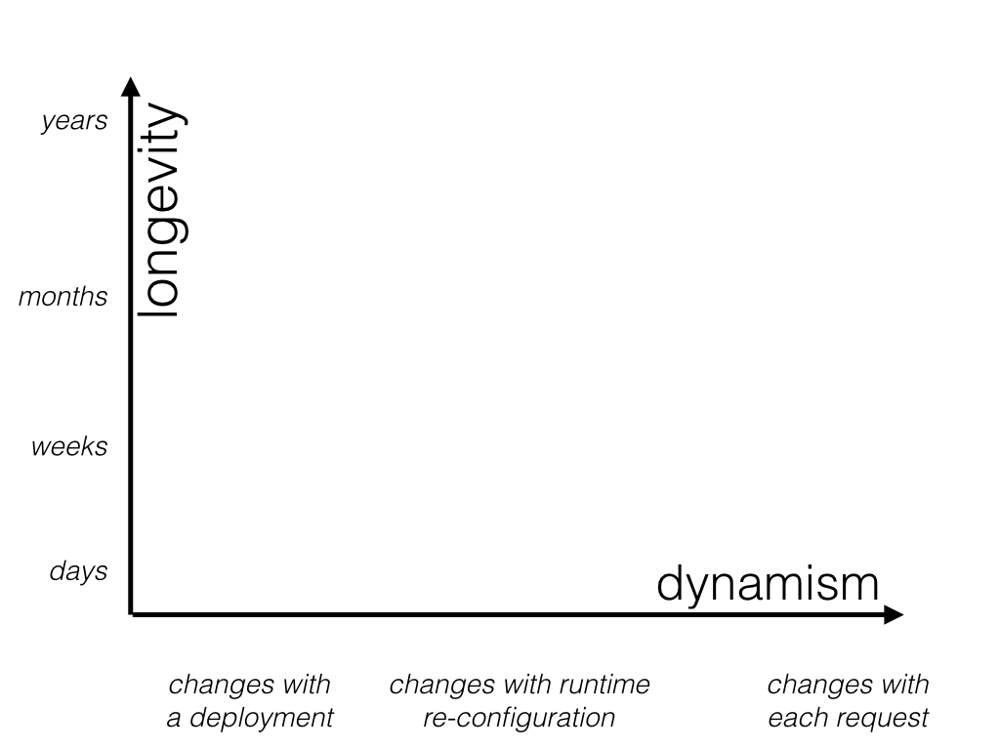
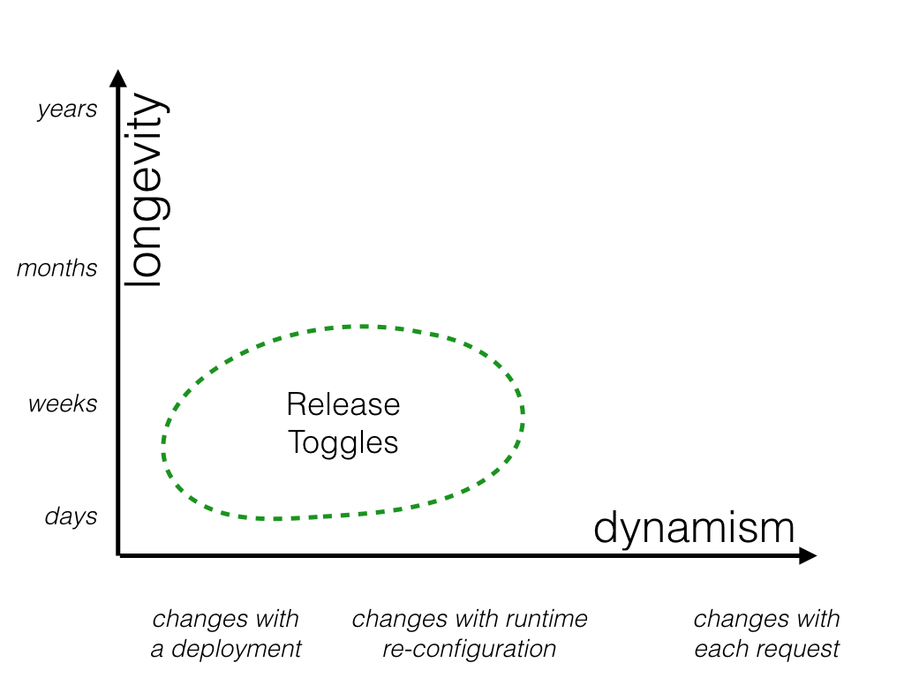
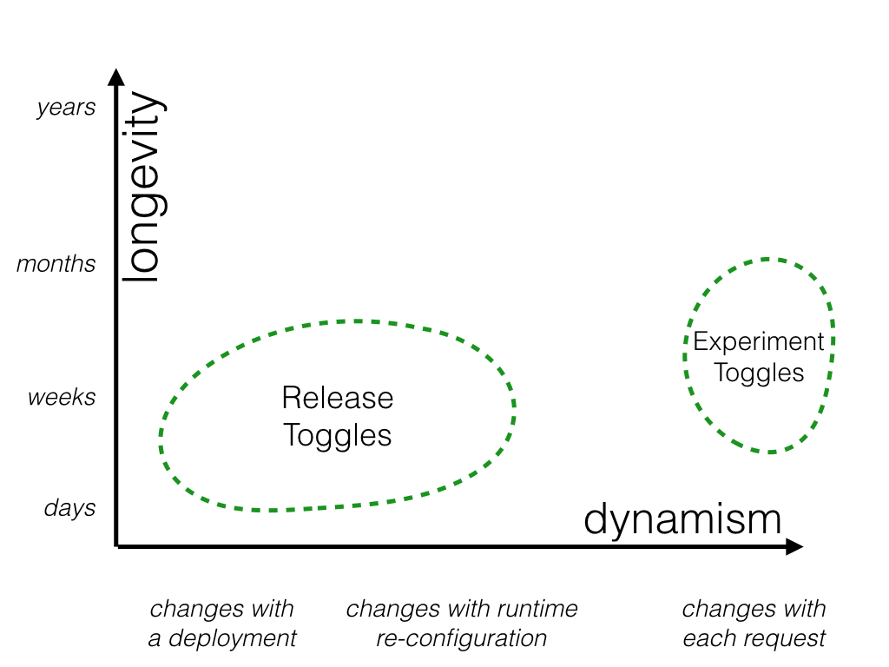
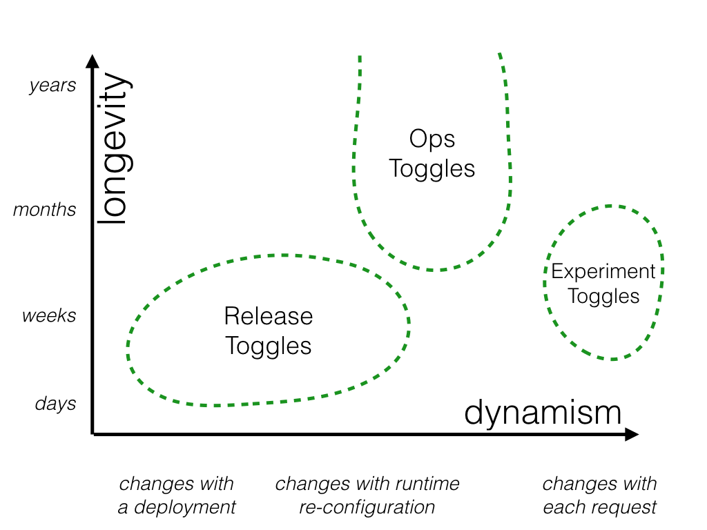
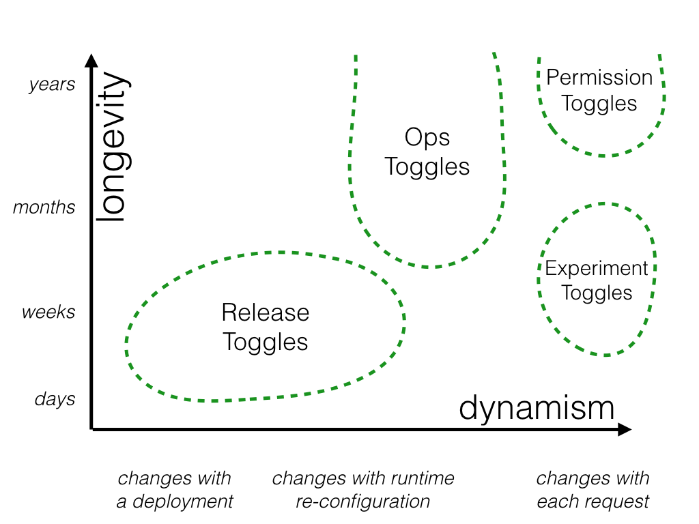
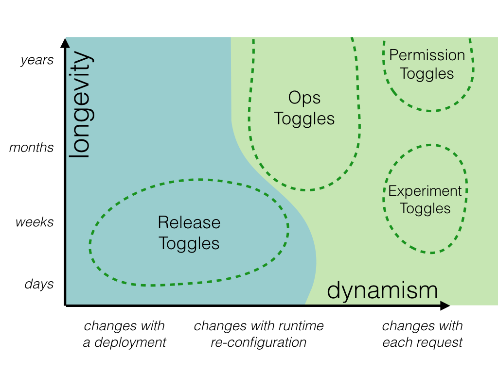
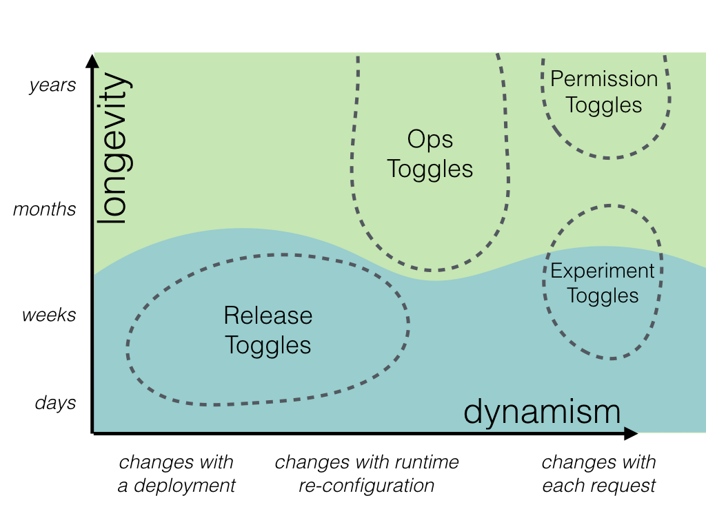

Feature Toggles
背景
使用 Toggle 開關控制功能的啟用與否。
function reticulateSplines() {
// current implementation lives here
}
function reticulateSplines() {
var useNewAlgorithm = false;
// useNewAlgorithm = true; // UNCOMMENT IF YOU ARE WORKING ON THE NEW SR ALGORITHM
if (useNewAlgorithm) {
return enhancedSplineReticulation();
} else {
return oldFashionedSplineReticulation();
}
}
function oldFashionedSplineReticulation() {
// current implementation lives here
}
function enhancedSplineReticulation() {
// TODO: implement better SR algorithm
}
更改 useNewAlgorithm 布林值切換新舊演算法。
Toggle Router
function reticulateSplines() {
if (featureIsEnabled("use-new-SR-algorithm")) {
return enhancedSplineReticulation();
} else {
return oldFashionedSplineReticulation();
}
}
featureIsEnabled實作判斷 toggle 是否打開或關閉的功能，稱作 Toggle Router。-
In-memory toggle 的實作範例:
function createToggleRouter(featureConfig) { return { setFeature(featureName, isEnabled) { featureConfig[featureName] = isEnabled; }, featureIsEnabled(featureName) { return featureConfig[featureName]; } }; }- 查表
featureConfig詢問 togglefeatureConfig是否打開
- 查表
-
Testability: 可是測試 toggle 開與關的兩種行為應符合預期。
describe('spline reticulation', function() { let toggleRouter; let simulationEngine; beforeEach(function() { toggleRouter = createToggleRouter(); simulationEngine = createSimulationEngine({toggleRouter: toggleRouter}); }); it('works correctly with old algorithm', function() { // Given toggleRouter.setFeature("use-new-SR-algorithm", false); // When const result = simulationEngine.doSomethingWhichInvolvesSplineReticulation(); // Then verifySplineReticulation(result); }); it('works correctly with new algorithm', function() { // Given toggleRouter.setFeature("use-new-SR-algorithm", true); // When const result = simulationEngine.doSomethingWhichInvolvesSplineReticulation(); // Then verifySplineReticulation(result); }); });
Toggle Configuration

Toggle Configuration 設定 toggle 的開關狀態。
Toggle Context 為操作的環境，用來提供 Toggle Configuration 決定 toggle 的開關與否。例如，測試的環境與線上的環境。
Canary(金絲雀) releasing
金絲雀(canary) release 跟金絲雀有什麼關係？
煤礦工業曾經使用金絲雀鳥來偵測煤礦中有害氣體的存在，如一氧化碳。金絲雀對於有毒氣體特別敏感，如果有毒氣體泄漏到煤礦中，金絲雀會優先感受到並死亡，警示煤礦工人及時撤離以保護生命安全。
在 canary release 中，將有小部分的使用者收到新的 release，這些使用者就是金絲雀，團隊需要觀察這些使用者的回饋來判斷軟體是否有問題，就像金絲雀在煤礦中作為氣體探測器一樣，提前感知可能的風險。
流程:
- 加強 Toggle Router，讓使用者的 toggle 的評估結果始終保持一致。
- 使用者 A 的 Toggle Router 是 on 時，之後的結果也會是 on。反之，結果是 off，之後的節果也會是 off。
- 隨機挑選使用者作為 Canary。
- 例如，1% 的使用者作為 Canary，使用 toggle on 的功能，其他 99% 保持原樣，使用 toggle off 的功能。
- 團隊評估 Canary 族群，使用新功能是否造成負面的影響。
- 沒有問題之後，將 toggle on 的功能推送給所有的使用者。
- 移除該 toggle
A/B testing
讓數據來佐證想法，避免 HiPPO 現象。
- 將使用者分成 A, B 兩群。
- A 群使用功能 X, B 群使用功能 Y，透過 toggle 控制 X, Y 功能的切換。
- 搜集數據，評估 X, Y 功能的使用結果。
Toggle 的種類

Toggle 技術的使用，考慮兩個面向:
- longevity: toggle 的生命週期
- dynamism: 需要多動態的切換
Release Toggles

開發中的功能，線上環境將 toggle 設定成 off，等到開發完畢後再將 toggle 設定成 on。
Toggle 的生命週期通常是一個功能開發的時間。在開發的過程，無開關 toggle 的需求。
Experiment Toggles

Toggle 會打開數小時或數週的時間，用來搜集數據。
因為每次系統變更都可能會讓搜集的數據失效，所以搜集的時間不會太長。
Ops Toggles

新功能上線，團隊不確定功能會造成的影響，想要透過一個開關可以讓我們減緩新功能的影響，或者停用新功能。
當團隊對新功能信心足夠時，Toggle 就可以移除。
少數的狀況，Toggle 會保留較長的時間，主要作用是讓團隊可以在系統高負載的情況下，可以停用需要昂貴的運算功能，減輕負載狀況。
Permission Toggles

- 只允許付費使用者使用 permium 功能。
- 只允許特定使用者存取 alpha 或 beta 的功能。
- per-request 決定 toggle 打開或關閉。
管理不同種類的 Toggle
管理動態 v.s. 靜態的 Toggle
- 要越動態，程式的開發成本越高。
- 靜態: 使用變數，或 map 設定 toggle 的開關與否。當有變動需要，改程式碼，然後重新編譯、部署。
- 動態: 根據不同使用者、不同請求決定 toggle 的開關。

管理短期 v.s. 長期的 Toggle
- 短期的 toggle，在不久的將來就會移除
- 不想花費過多的成本在短期的程式碼上，可優先考慮簡單的使用 if-else 實作
- 長期的 toggle
- 會在程式碼中存活比較久的時間，我們希望能有效的管理，不要讓 toggle point 散落在各個地方。

實作
我們實作一個新的功能，在 email 中提供一個方便使用者取消訂單的連結。並且，可以透過 feature toggle 打開或關閉此功能。
const features = fetchFeatureTogglesFromSomewhere();
function generateInvoiceEmail() {
const baseEmail = buildEmailForInvoice(this.invoice);
if (features.isEnabled("next-gen-ecomm")) {
return addOrderCancellationContentToEmail(baseEmail);
} else {
return baseEmail;
}
}
潛在議題
- 決定是否開啟在 email 中增加連結的功能，由一個神奇的字串(magic string) "next-gen-ecomm" 決定。
- 產生 email 內容的 function，相依字串 "next-gen-ecomm"，並需要知道他與取消訂單的連結有關係。
- 無法做到，只想開啟 "next-gen-ecomm" toggle 的部分功能，但是不想要開啟取消訂單連結的功能。
- 無法只開啟取消訂單連結的功能給部分使用者。
const features = fetchFeatureTogglesFromSomewhere();
const featureDecisions = createFeatureDecisions(features);
function generateInvoiceEmail() {
const baseEmail = buildEmailForInvoice(this.invoice);
if (featureDecisions.includeOrderCancellationInEmail()) {
return addOrderCancellationContentToEmail(baseEmail);
} else {
return baseEmail;
}
}
function createFeatureDecisions(features) {
return {
includeOrderCancellationInEmail() {
return features.isEnabled("next-gen-ecomm");
}
// ... additional decision functions also live here ...
};
}
潛在議題
- 程式碼直接相依 feature flagging system，將使得測試困難。
- feature flagging system 會在程式碼各處流行，會越來越多程式碼跟他有相依性。這將使得替換 feature flagging system 難度增加。
const features = fetchFeatureTogglesFromSomewhere();
const featureDecisions = createFeatureDecisions(features);
const factory = createFeatureAwareFactoryBasedOn(featureDecisions)
const emailler = factory.invoiceEmailler()
function createInvoiceEmailler(config) {
return {
generateInvoiceEmail() {
const baseEmail = buildEmailForInvoice(this.invoice);
if (config.includeOrderCancellationInEmail) {
return addOrderCancellationContentToEmail();
} else {
return baseEmail;
}
},
// ... other invoice emailer methods ...
};
}
function createFeatureAwareFactoryBasedOn(featureDecisions) {
return {
invoiceEmailler() {
return createInvoiceEmailler({
includeOrderCancellationInEmail: featureDecisions.includeOrderCancellationInEmail()
});
},
// ... other factory methods ...
};
}
describe( 'invoice emailling', function() {
it( 'includes order cancellation content when configured to do so', function() {
// Given
const emailler = createInvoiceEmailler({includeOrderCancellationInEmail: true});
// When
const email = emailler.generateInvoiceEmail();
// Then
verifyEmailContainsOrderCancellationContent(email);
};
it( 'does not includes order cancellation content when configured to not do so', function() {
// Given
const emailler = createInvoiceEmailler({includeOrderCancellationInEmail: false});
// When
const email = emailler.generateInvoiceEmail();
// Then
verifyEmailDoesNotContainOrderCancellationContent(email);
};
});
潛在議題
使用 if-else 判斷，不適合用在
- toggle 數量很多 或
- long-live toggle
const features = fetchFeatureTogglesFromSomewhere();
const featureDecisions = createFeatureDecisions(features);
const factory = createFeatureAwareFactoryBasedOn(featureDecisions)
const emailler = factory.invoiceEmailler()
function createInvoiceEmailler(additionalContentEnhancer) {
return {
generateInvoiceEmail() {
const baseEmail = buildEmailForInvoice(this.invoice);
return additionalContentEnhancer(baseEmail);
},
// ... other invoice emailer methods ...
};
}
function identityFn(x) { return x; }
function createFeatureAwareFactoryBasedOn(featureDecisions) {
return {
invoiceEmailler() {
if (featureDecisions.includeOrderCancellationInEmail()) {
return createInvoiceEmailler(addOrderCancellationContentToEmail);
} else {
return createInvoiceEmailler(identityFn);
}
},
// ... other factory methods ...
};
}